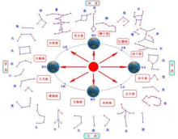

古老传统节日的起源与上古原始信仰、祭祀文化及天象、历法等人文与自然文化内容有关。根据现代人类学、考古学的研究成果，人类最原始的两种信仰：一是天地信仰，二是祖先信仰。古老节日多数形成于古人择吉日祭祀，以谢天地神灵、祖先恩德的活动。早期的节日文化，反映的是古人自然崇拜、固本思源等人文精神；一系列的祭祀活动，则蕴含着祗敬感德、礼乐文明深邃文化内涵。节日的起源和发展是一个逐渐形成，潜移默化地完善与普及的过程。古时南北风俗各异，先秦时代端午节的节俗活动鲜见于中原文献记载，就现存文献没法直接考证其源流。关于端午节的相关文字记载，“端午”二字，最早出现在晋代的《风土记》中，但端午的习俗却早已有之，譬如龙舟竞渡祭祀之俗，早已存在。 [7] [27-31]
端午节两个标志性习俗是吃粽子和龙舟竞渡。据闻一多先生在《端午考》与《端午的历史教育》（见《闻一多全集》）论文中考证认为：吴越先民以“龙”为图腾 [12] ，他们不仅有“断发文身”以“像龙子”的习俗，而且每年在端午这天，举行一次盛大的图腾祭；其中有一项活动便是在急鼓声中以刻画成龙形的独木舟，在水面上作竞渡祭龙神，也给自己游戏取乐，这便是龙舟竞渡习俗的由来。关于龙的传说，在《路史》等著作中有相关记载：“天皇氏骧首、鳞身”。《易纬通卦验补遗》：“天皇氏之先，与乾曜合德。”此言天皇氏祖先与日、月、五星（七曜）合德，即其身份极为崇高。《河图》：“五龙见教，天皇被迹。”荣氏注曰：“五龙治在五方，为五方神。”《春秋命历序》：“（五龙）父子分治五方”。以“龙”为图腾，在图腾时期，四支族的四龙各治一方，而以团族的一龙为中央共主，所以有五龙分治五方之说（闻一多《端午考》）。这些龙的历史传说，其实即是源于上古吴越先民对龙的崇拜与信仰。 [14] [19] [32-35]

龙及龙舟文化始终贯穿在端午节的传承历史中。据考证，进行龙舟竞渡的先决条件必须是在产稻米和多河港的地区，这正是我国南方沿海地区的特色。我国古代南方水网地区人们常以舟代步，以舟为生产工具和交通工具。人们在捕捉鱼虾的劳作中，攀比渔获的多寡，休闲时又相约划船竞速，寓娱乐于劳动、生产及闲暇中，这是远古时竞渡的雏形 [13] 。据河姆渡遗址和田螺山遗址的史前文化表明，早在5000年至7000年前，就有了独木舟和木桨；龙舟最初原形是单木舟上雕刻龙形的独木舟，后来发展为木板制作的龙形船。在古代典籍有关龙舟起源的记载中，最早是出现在东汉。据此可以推测，端午的习俗最初可能只在吴越民族中流行，后来吴越文化逐渐和中原文化交流融合，这种习俗才传到长江上游和北方地区，端午节风俗形成可以说是南北风俗融合的产物，随着历史发展又注入新的内容。